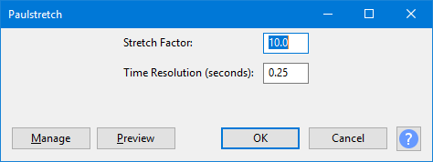

Paulstretch
Use Paulstretch to slow down audio by extreme amounts without changing the pitch.
- Accessed by:
- 
Stretch Factor
This sets how much longer the processed sound will be relative to the original. For example, setting this to 10 will stretch 1 minute of audio into approximately 10 minutes of audio, somewhat less at higher Time Resolutions.
Time Resolution (seconds)
In order for the effect to work, this value must be smaller than the selected area in the waveform.
Small values have good time resolution, but poor frequency resolution, so you may still be able to detect a rhythm (albeit a very slow rhythm). Large values have poor time resolution, but have great frequency resolution, so transients will disappear but pitch differences may be better preserved.
Usually, a value of 0.25 seconds is good for most music. Very large values (greater than 2 seconds) can be used for special effects such as "smearing" a song into a sound-texture, even if the Stretch Factor is close to 1.0.
Buttons
Clicking on the command buttons give the following results:
- gives a dropdown menu enabling you to manage presets for the tool and to see some detail about the tool. For details see Manage presets
- plays a short preview of what the audio would sound like if the effect is applied with the current settings, without making actual changes to the audio. The length of preview is determined by your setting in , the default setting is 6 seconds.
- applies the effect to the selected audio with the current effect settings and closes the dialog
- aborts the effect and leaves the audio unchanged, closing the dialog
 brings you to the appropriate page in the Manual, this page
brings you to the appropriate page in the Manual, this page